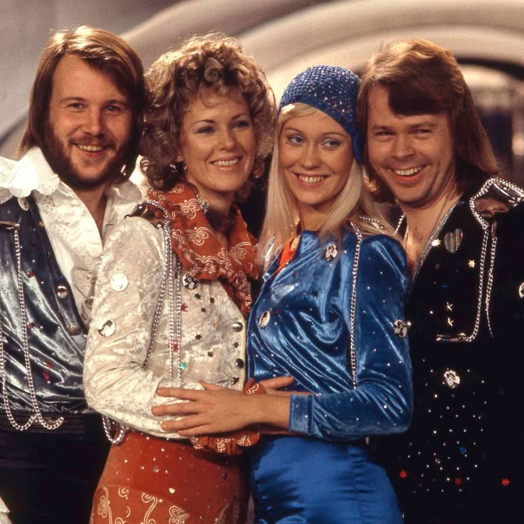
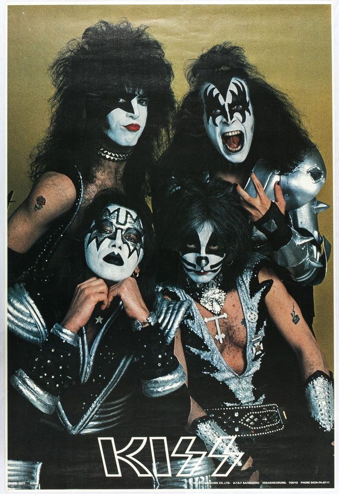

ABBA is a legendary Swedish pop group that dominated the global music scene in the 1970s and 1980s. Formed in Stockholm in 1972, the band consists of four members: Agnetha Fältskog, Björn Ulvaeus, Benny Andersson, and Anni-Frid Lyngstad (whose initials form the name "ABBA"). Known for their catchy melodies, flamboyant costumes, and harmonious vocals, ABBA became synonymous with disco-era glamour and timeless hits.
KISS is an iconic American rock band formed in New York City in 1973, renowned for their explosive live performances, theatrical makeup, and fiery stage antics. The original lineup—Paul Stanley (Starchild), Gene Simmons (Demon), Ace Frehley (Spaceman), and Peter Criss (Catman)—created a larger-than-life persona that blended hard rock with shock-rock spectacle.
